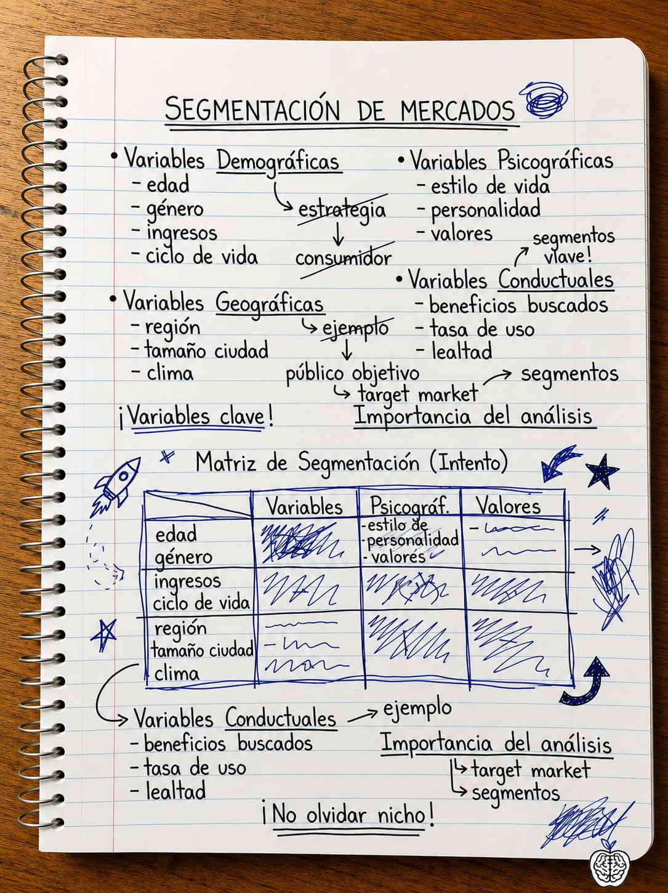
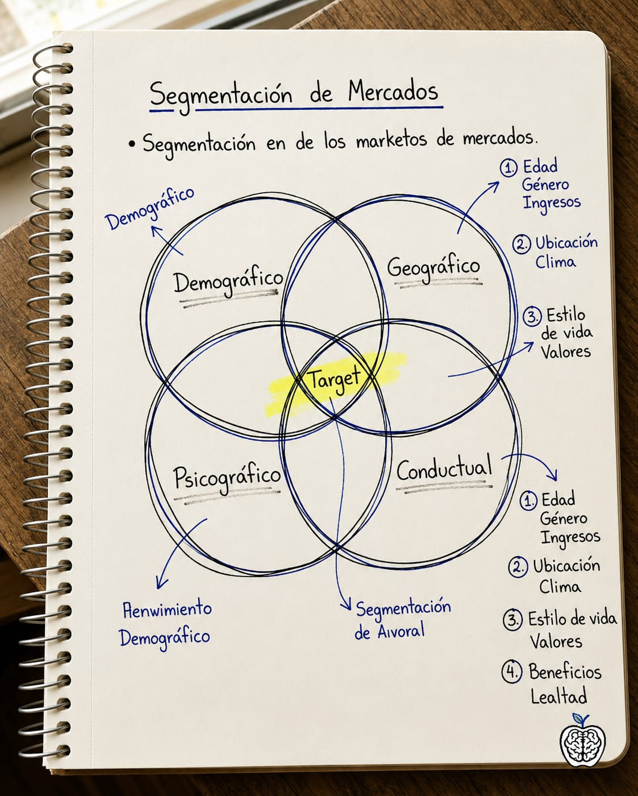
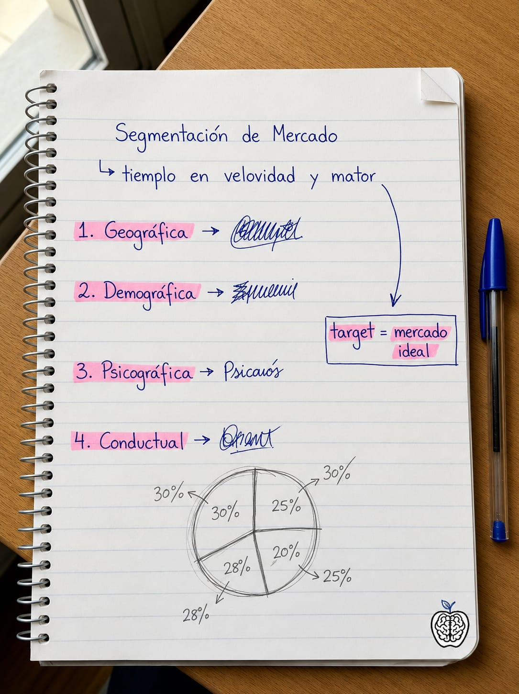

La misma clase.
Dos experiencias completamente distintas.
La diferencia no es estudiar más horas. Es estudiar con el material correcto.
- Apuntes desordenados y difíciles de entender.
- Información incompleta y sin estructura.
- Horas buscando qué estudiar realmente.
- Olvidos constantes y repaso poco efectivo.
- Estrés, frustración y resultados irregulares.



Estos eran los apuntes de un estudiante.
- Apuntes organizados y listos para estudiar.
- Contenido completo, estructurado y claro.
- Sabes exactamente qué estudiar y en qué orden.
- Repaso efectivo con técnicas de aprendizaje.
- Más confianza para tu examen: llegas listo, no a ciegas.

Y en esto los convertimos.
Abrir la guía completa de Segmentación de Mercados →Así de fácil funciona
No necesitas aprender un método nuevo. Sigue tomando apuntes como siempre.
Toma apuntes como siempre
En clase, en tu cuaderno, tablet o portátil. No necesitas aprender un método nuevo ni cambiar tu forma de estudiar.
Envíanos tus apuntes
Fotos, PDF, capturas o documentos. Nosotros nos encargamos del resto.
Recibe tu guía en menos de 24 horas
Transformamos tus apuntes en una guía diseñada para comprender más rápido, recordar mejor y estudiar con mayor confianza.
- Explicaciones simples
- Ejemplos reales
- Preguntas de práctica
- Plan de repaso
Recibirás gratis el Kit Stramont de toma de apuntes para que tus próximas clases sean todavía más fáciles de transformar.
⚡ Mientras otros siguen organizando información, tú ya estarás estudiando.
Hecho en serio, con método
Basado en cómo aprende tu cerebro
Cada guía incorpora técnicas respaldadas por décadas de investigación para ayudarte a comprender más rápido y recordar durante más tiempo.
Disponible cuando todavía importa
Recibe tu guía en menos de 24 horas para empezar a estudiar mientras la clase sigue fresca en tu memoria.
Tú toma apuntes. Nosotros hacemos el resto.
No pierdas horas organizando información o creando resúmenes. Envíanos tus apuntes y recibe una guía lista para estudiar en menos de 24 horas.